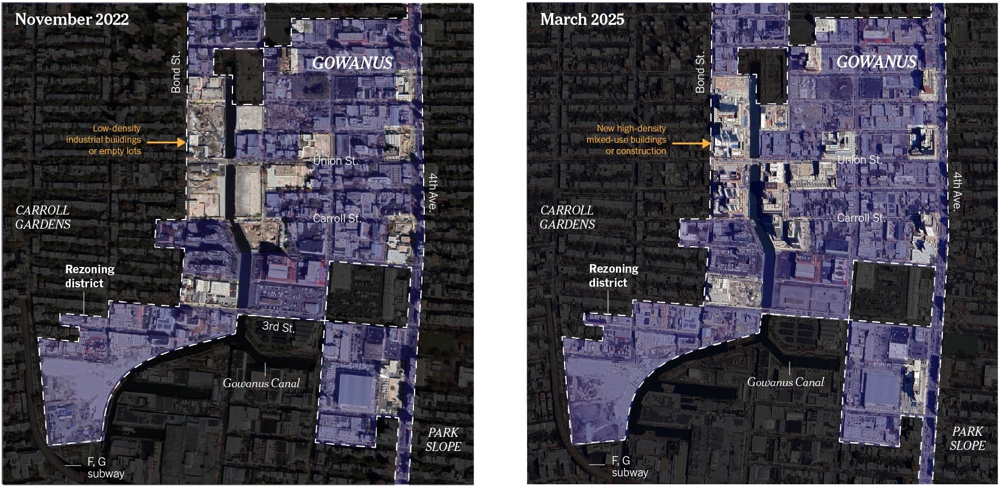
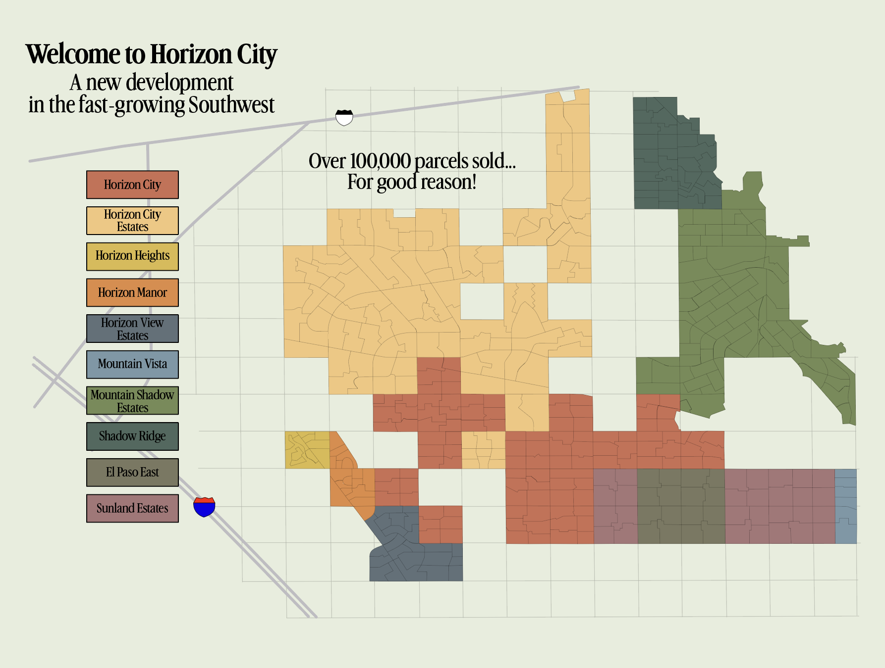
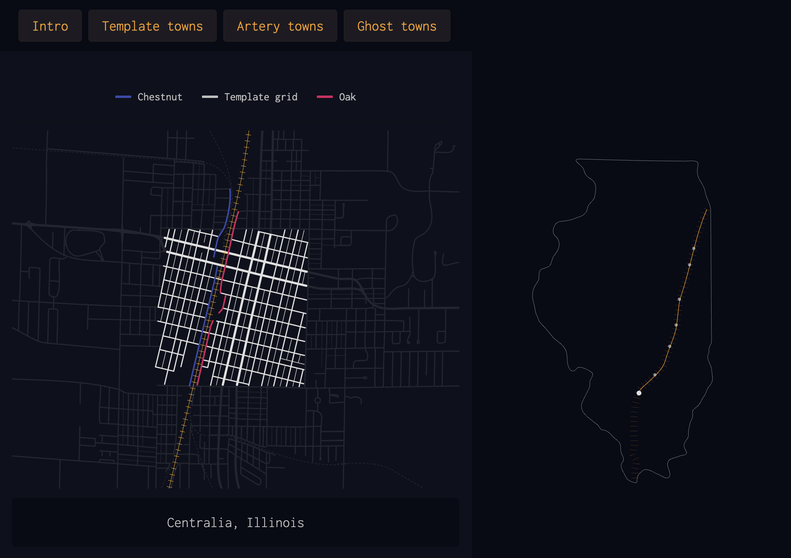
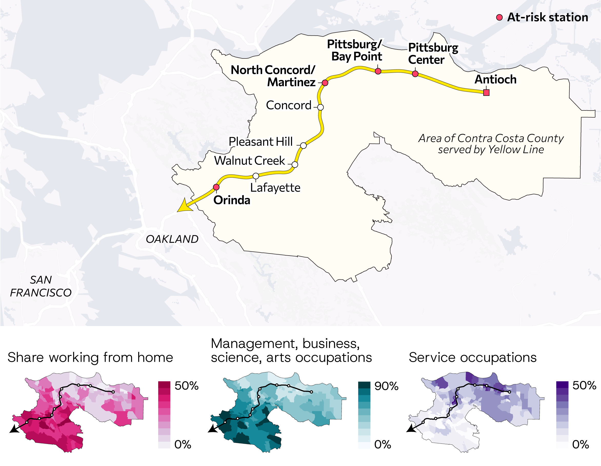
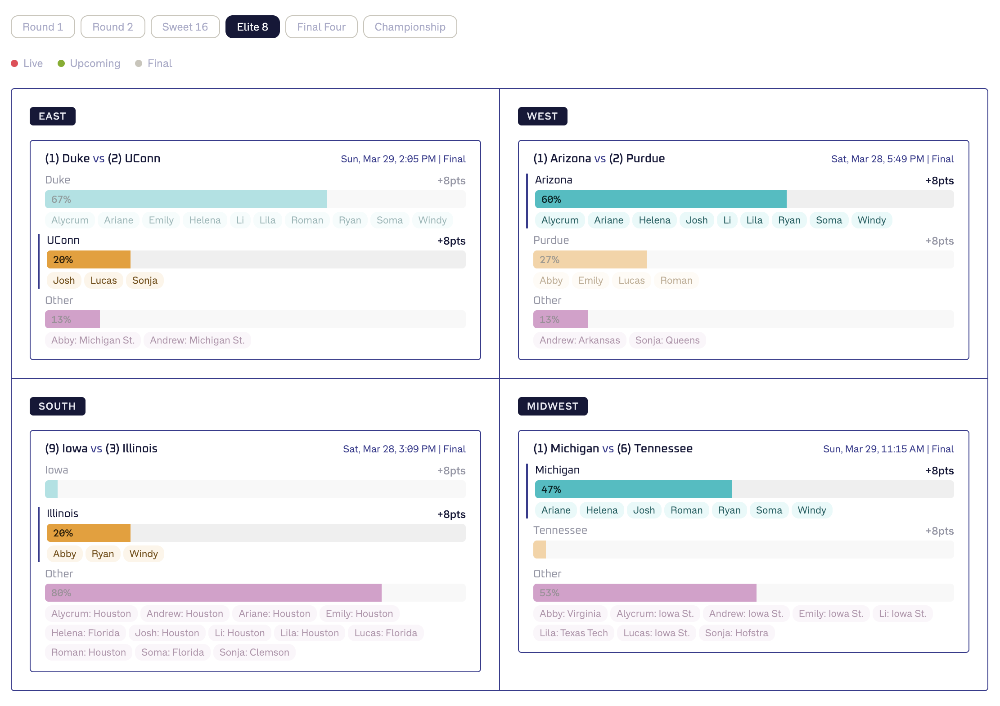
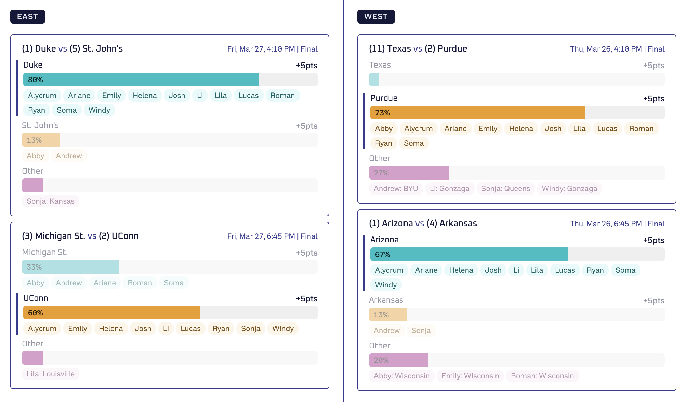
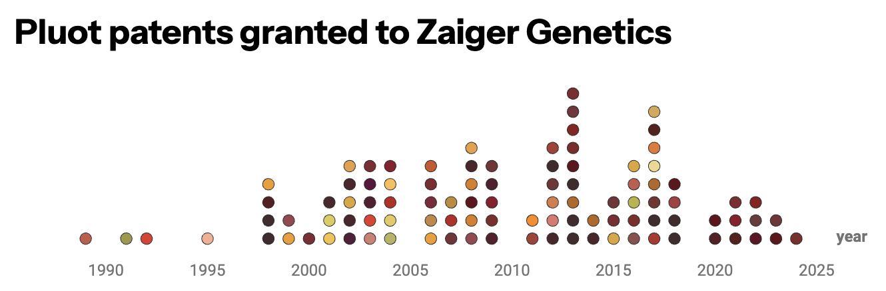
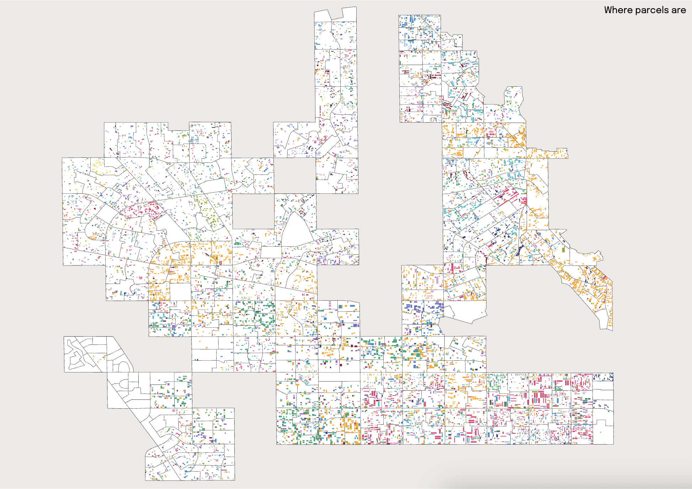
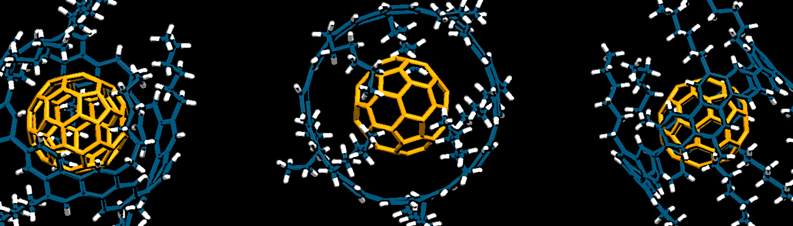
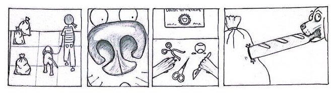

Gowanus's rezoned skyline
Google Earth Pro
Illustrator

I investigate the micro and the macro and illuminate them with visuals.
I was most recently a scientific editor at Nature journals for ten years. I got hooked on visual data journalism at Columbia University's Lede Program and shifted careers in 2026.
Check out my resume, github, or LinkedIn and feel free to email!

A bit of visual forensics: Why are there fake roads in the desert?

Visible patterns in how the U.S. government and railroad companies worked together to aggressively settle the American West.

Some of BART's at-risk stations serve riders who need it most.


A March Madness dashboard. Feed in a csv of your pool's picks and rules, and watch your chances change in real time.

The colors and flavors of the obsessive world of hybrid fruit breeding.





I've written on why big cities like New York struggle to recycle, our waste problem, decarbonization technologies, the plastics crisis, and mental health in academia.
I've highlighted research spanning protein design, embryo biomechanics, and molecular polyhedra.
See my Google Scholar for a full list.